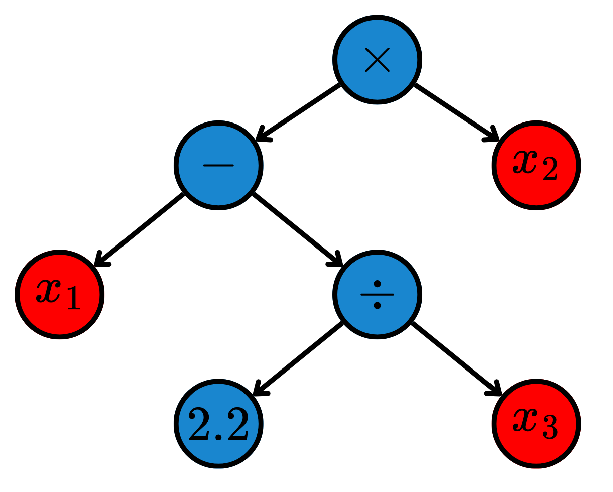

Symbolic models seek to find mathematical expressions that best describe the training data. To do that, these models use Evolutionary Algorithms (EA) – such as Genetic Algorithms (GAs) – to search in a symbolical space.
Symbolic Regression (SR)
While standard regression algorithms assume a specific mathematical structure and optimize its numerical parameters, Symbolic Regression (SR) takes a different approach. It searches the space of mathematical expressions to simultaneously discover both the structure of the model and its parameters.
Given a training set \(\mathcal{D}^{(\text{Train})} = \{(\boldsymbol{x}_i^{(\text{Train})}, y_i^{(\text{Train})})\}_{i=1}^N\), SR seeks an optimal function \(f\) from a space of possible mathematical expressions \(\mathcal{E}\). This space is constructed by combining mathematical primitives, which include the features, constants and a predefined set of operators. They are combined in trees, such as depicted in Fig. 1.

Figure 1: Diagram of a tree that represents the equation \(f(x_1, x_2) = x_2\left(x_1 - \frac{2.2}{x_3}\right)\).
The optimization objective is to find the expression \(f \in \mathcal{E}\) that minimizes a given loss function \(\mathcal L\) while simultaneously penalizing the complexity of the expression \(C(f)\) to prevent overfitting and encourage interpretability: \[
\hat{f} = \underset{f \in \mathcal{E}}{\arg\min} \ \sum_{i=1}^N \mathcal L\left(y_i^{(\text{Train})}, f(\boldsymbol{x}_i^{(\text{Train})})\right) + \lambda C(f),
\tag{1}\] where \(\lambda\) controls the tradeoff between accuracy and simplicity. The complexity \(C(f)\) is often defined as the number of nodes in the expression tree.
Because the search space \(\mathcal{E}\) is discrete, infinite, and non-differentiable, SR uses EAs to search the best possible functions. After the training, the model is described by a single mathematical equation, making it a highly interpretable model.
Code: Symbolic Regression
Importing libraries for the SR.
import numpy as npimport matplotlib.pyplot as pltfrom gplearn.genetic import SymbolicRegressorimport graphviz
Creating a function and drawing noisy observations from it.
In a Jupyter environment, please rerun this cell to show the HTML representation or trust the notebook. On GitHub, the HTML representation is unable to render, please try loading this page with nbviewer.org.
Parameters
population_size
2000
generations
20
tournament_size
20
stopping_criteria
0.01
const_range
(-1.0, ...)
init_depth
(2, ...)
init_method
'half and half'
function_set
('add', ...)
metric
'mean absolute error'
parsimony_coefficient
0.01
p_crossover
0.7
p_subtree_mutation
0.1
p_hoist_mutation
0.05
p_point_mutation
0.1
p_point_replace
0.05
max_samples
0.9
feature_names
None
warm_start
False
low_memory
False
n_jobs
1
verbose
1
random_state
42
Plotting the prediction against the true values, and printing the best equation found.